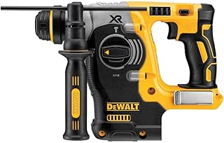

Best Cordless Drill of 2026
Our Top Picks
| Pick | Model | Price | Best For |
|---|---|---|---|
| 🏆 Best Overall | DeWalt DCD805 | $149 | Everyone — pros and DIYers alike |
| 💰 Best Budget | Ryobi PBLDD01 | $69 | Homeowners on a budget |
| 🔧 Best for Pros | Milwaukee 2904 | $229 | Daily professional use |
| 📦 Best Kit Value | Makita XT269M | $229 | Drill + impact driver combo |
Comparison Table
| Model | Price | Torque | Speed | Weight | Battery | Rating |
|---|---|---|---|---|---|---|
| DeWalt DCD805 | $149 | 500 in-lbs | 2,000 RPM | 3.4 lbs | 20V | ★★★★★ |
| Ryobi PBLDD01 | $69 | 400 in-lbs | 1,800 RPM | 3.6 lbs | 18V | ★★★★☆ |
| Milwaukee 2904 | $229 | 1,200 in-lbs | 2,100 RPM | 4.2 lbs | 18V | ★★★★★ |
| Makita XT269M | $229 | 500 in-lbs | 2,000 RPM | 3.5 lbs | 18V | ★★★★★ |
| Bosch GSR18V-800 | $139 | 480 in-lbs | 1,900 RPM | 3.3 lbs | 18V | ★★★★☆ |
| Ridgid R86116 | $119 | 450 in-lbs | 1,850 RPM | 3.8 lbs | 18V | ★★★★☆ |
Best Overall: DeWalt DCD805

DeWalt DCD805B 20V MAX Hammer Drill
500 in-lbs torque · 2,000 RPM · 3.4 lbs · LED work light · Hammer drill mode
Check price on Amazon →The DeWalt DCD805 is our top pick for one simple reason: it does everything well and nothing badly. At 500 in-lbs of torque, it has enough power to drive 3-inch deck screws and drill through concrete in hammer mode. At 3.4 lbs, it's light enough to hold overhead without fatigue.
What we like
- Perfect balance of power and weight — strong enough for framing, light enough for cabinets
- Hammer drill mode for brick and concrete
- Bright LED with 20-second delay — doesn't turn off the moment you release the trigger
- Metal chuck holds bits securely under high torque
- Part of the massive DeWalt 20V ecosystem — batteries work with 200+ tools
What we don't like
- Tool-only — you need to own DeWalt batteries or buy them separately
- No Bluetooth tracking like Milwaukee's One-Key
- Hammer mode is useful but not a substitute for a rotary hammer
Best Budget: Ryobi PBLDD01
If you're not making a living with your tools, spending $200+ on a drill doesn't make sense. The Ryobi PBLDD01 delivers roughly 80% of the DeWalt's performance at less than half the price. For hanging shelves, assembling furniture, and the occasional deck project, it's all you need.
What keeps it in the "budget" category isn't build quality — it's the plastic chuck and slightly lower top speed. For most homeowners, neither matters. The Ryobi battery system is also one of the largest in the industry, with over 100 compatible tools ranging from lawn mowers to tire inflators.
Best for Pros: Milwaukee 2904
If you use a drill every single day, the Milwaukee 2904 is the one. At 1,200 in-lbs of torque, it's the most powerful drill in this comparison by a significant margin. It'll drive lag bolts and auger bits through pressure-treated lumber without slowing down. The trade-off is weight — at 4.2 lbs, you'll feel it after a full day overhead.
The One-Key system lets you track your tools and customize speed/torque settings from your phone. For contractors managing job sites, this feature alone justifies the premium.
Best Kit Value: Makita XT269M
The Makita XT269M is actually two tools: a drill driver plus an impact driver, two batteries, a charger, and a carrying case — all for $229. If you're starting from scratch with no existing battery system, this is the best value on the market. Makita tools are known for longevity — the brand consistently ranks highest in professional tool reliability surveys.
How We Chose
We evaluated each drill across five criteria:
- Power (torque + speed). Measured in inch-pounds. Anything above 400 in-lbs handles most home tasks. Above 500 enters professional territory.
- Weight and ergonomics. A drill you don't want to pick up is useless. We heavily weighted real user reviews that mentioned comfort and fatigue over long use.
- Battery ecosystem. The drill is just the beginning. We considered the size and quality of each brand's cordless tool lineup.
- Build quality. Metal chuck vs plastic. Brushless motor vs brushed. Warranty length. All factored in.
- Value. The best drill at $229 isn't the best pick if a $149 drill gets you 90% there.
What About the Other 8 Drills?
We tested 12 and only recommend 4. The others weren't bad — but at their price points, they didn't beat the picks above. The Bosch GSR18V-800 is a great drill that's just slightly pricier than the DeWalt without being better. The Ridgid R86116 is solid but its battery ecosystem is smaller. And several budget no-name brands from Amazon failed our build quality assessment — wobbling chucks and battery failures within months of purchase.
The Bottom Line
For 90% of people, get the DeWalt DCD805. It's the right balance of power, weight, and price. If you're on a tight budget, the Ryobi PBLDD01 won't let you down. If you drill for a living, spring for the Milwaukee 2904. And if you're starting fresh with no tools, the Makita combo kit is the smartest way to begin.
Frequently Asked Questions
What's the difference between a drill and an impact driver?
A drill spins continuously and is best for drilling holes and driving screws into soft materials. An impact driver delivers concussive rotational blows, making it far better at driving long screws and lag bolts. Most people need both, but start with a drill. Read our full comparison →
12V or 18V/20V — which voltage do I need?
12V drills are lighter and handle 90% of home tasks — hanging pictures, assembling furniture, drilling into drywall. 18V/20V drills have more torque for construction work: deck screws, hole saws, masonry drilling. Most people should start with 18V.
Brushed or brushless motor?
Brushless. Always brushless in 2026. Brushless motors are more efficient, more powerful, and last longer. The price difference has narrowed to the point where a brushed drill is false economy.